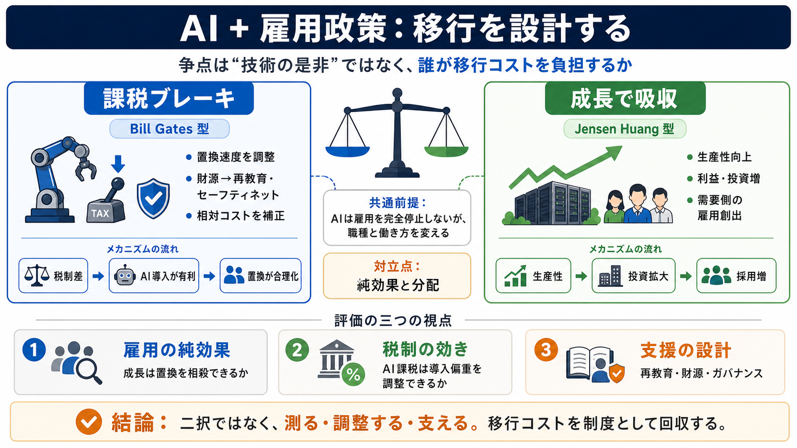

Nvidia CEO Jensen Huang disagrees with Bill Gates on AI tax proposals
Huang responded the very next day in a Fox Business interview, saying he “sees things differently.” His counter-argument…

Break the binary
AIが仕事を変える一方で、焦点は「技術の是非」ではなく、誰が移行コストを負担するかに移っている。
What’s really at stake
ゲイツもファンも、置換（disruption / 混乱・置換）を否定していない。違いは、対応策を「課税ブレーキ」か「成長吸収」かに置く順序だ。
Incentives decide
企業の意思決定は倫理だけでなく、相対コスト（税制の差）で動く。だから議論は「善悪」よりインセンティブ設計へ収束する。
Pay for the shift
ゲイツは、自動化のインセンティブを調整し、その財源を再教育やセーフティネットに回すべきだと主張する。
Grow past it
ファンはロボット税に反対し、基本的に生産性向上 → 利益・投資増 → 雇用創出につながるという見通しに賭ける。
Same problem, order differs
ゲイツは先に置換偏重を抑える（課税）一方、ファンは後から成長で埋める（投資・拡張）発想だ。
Two causal stories
両者とも経路（カラクリ）を提示するが、重心が違う。ゲイツは税制→相対コスト、ファンは税制→利益の分配に期待する。
The hard part remains
税制論争では対立が見えるが、失職者支援（再教育・制度運用・対象・財源）は記事の範囲では決着していない。
Ask the right questions
記事が示す核心は、二択（課税か成長か）ではなく、効果の内訳を分けて検証することだ。
Quick answers
ロボット税は“何のためか”が肝。課税か成長かの前に、置換と支援の関係をどう切るかを整理する。
Where uncertainty lives
政策は“実装”で決まるが、記事では数量的根拠（置換の相殺幅、税制の効き、費用対効果）が十分に示されていない。
Policy lens
私見では、この記事の強みは技術楽観/悲観ではなく、財源とインセンティブ設計として整理している点だ。
What to do next
課税か成長かより先に、純効果（増えるのか）と分配（誰が取り残されるのか）を分けて評価し、移行コストを制度として回収することが要る。
Sources & anchors
本スライドは、ユーザー提供の本文（Summary / Points / FAQ / My opinion）を情報源として圧縮しています。記事中で言及された主要人物・論点は以下です。
Bill Gates（ロボット／AI課税、設備投資控除と給与課税の差に着目）／ Jensen Huang（課税案に反対、生産性成長と投資・データセンター等の雇用需要を重視）／ 共通論点（置換は起こり得る、しかし純効果と分配が一致しない、失職者支援は未決）
※元記事URLはユーザー入力に含まれていないため、ここでは個別リンクを列挙できません。
Huang responded the very next day in a Fox Business interview, saying he “sees things differently.” His counter-argument…
News # Jensen Huang Rejects Bill Gates Plan to Tax AI, Workplace Robots ## Nvidia CEO Jensen Huang rejected Bill Gates…
## GadgetsNow's Post ### GadgetsNow 3h · Nvidia CEO Jensen Huang disagrees with Bill Gates' robot tax proposal. Huan…
By Eleanor Pringle Eleanor Pringle Senior Reporter, Economics and Markets Eleanor Pringle By Eleanor Pringle El…
Fortune # ‘I’m in favor of taxes,’ says Nvidia’s Jensen Huang—but he doesn’t agree with Bill Gates on his plan to slow …